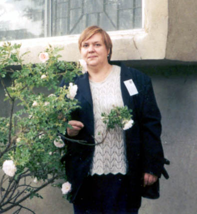

|
Коллеги и друзья о
Елизавете Анатольевне Денисенко

25.05.1951 - 26.08.2009
|
|
Странно и не верится - нет больше Лизы и впредь
не раздастся в телефонной трубке "Привет, дед, это я".
Кажется,
что наше знакомство, переросшее спустя годы в дружбу двух близких по
духу, образу мышления, по работе, по пониманию значимости
целостности биологических систем, произошло совсем недавно.
Итак, 1980 г., лето, Таллин, великолепный спорткомплекс в
Пириту, на берегу Балтики. Идет очередной Всесоюзный съезд по
актинометрии и атмосферной оптике. В перерыве между заседаниями к
столику в уютном зале ресторана, за которым обедали
К.Я. Кондратьев, Ю.К. Росс, Н.А. Зайцева и я,
буквально подлетает Елизавета Анатольевна и без всяких лишних слов
обращается к Ю. Россу: "Юхан Карлович, Вы же обещали
познакомить меня с И.А. Шульгиным" и затем, не дожидаясь
ответа, "ах, да, извините", тут же столь же быстро удалилась.
В
тот же день Юхан Росс (я с ним, как и Х. Тоомингом, стали
коллегами и друзьями еще с 1960 г. после встречи в Таллине на
выездном заседании нашего Научного совета по фотосинтезу АН СССР,
который возглавлял А.А. Ничипорович) знакомит с
Е.А. Денисенко (Лизой, как сама она просила называть себя).
Начинается совместная работа над возможной темой ее
диссертационной работы по продуктивности экосистем. Однако, через
несколько лет, Лиза несколько меняет направление исследований и
наступает период ее активного сотрудничества с эрудированным, умным,
тонким и деликатным человеком - Юрием Михайловичем Свирежевым. Это
не только не мешает нам сотрудничать, обсуждать те или иные научные
и не научные проблемы, но, напротив, Елизавета Анатольевна все
больше и больше делится своими мыслями и размышлениями о жизни, о
своих родных - особенно о брате.
С Елизаветой было и легко и
порой трудно разговаривать на взаимно интересующие нас научные темы
- импульсивная, твердо верящая в то, о чем она говорила,
принципиальная до мозга костей, она была способна мгновенно
"накалить" беседу и так же быстро "остыть" и затем спокойно
согласится с любым собеседником, если понимала не только свою
правоту, но и правоту другого человека.
Большую привязанность Е.
Денисенко испытывала к эстонским коллегам из Института физики и
астрономии АН ЭстССР в Тарту - мы часто ездили туда и вместе и
порознь, но мои интересы были связаны с работами Ю. Росса,
Х. Тооминга, Х. Молдау, а Е. Денисенко сотрудничала с
Я. Калиссом, В. Ойя, К. Россом и другими коллегами и,
надо отметить, что во все годы между нами и эстонцами были очень
теплые отношения и никогда не возникало холодка на национальной или
политической почве.
Не могу не сказать о многих и многих
"школах", где часто бывала и выступала Е. Денисенко. Это были
прекрасные дни, наполненные громогласным звучанием Лизиного голоса,
что-то доказывающего, спорящего, и при этом смеющегося и очень
жизнерадостного и доброго.
Вообще говоря, доброта и щедрость
были неотъемлемыми чертами ее характера. Порой не нужен был какой-то
намек, но Лиза умела мгновенно приходить на помощь, помогая многим и
многим людям.
Елизавета всегда умела "находить" коллег по науке
(и с учетом личных качеств человека). Вот и последний творческий
период жизни насыщен интересной и плодотворной работой с Леонидом
Леонидовичем Голубятниковым - математиком, экологом, работающим в
ИФА РАН. Выходит серия статей и, надо отдать должное, они насыщены
оригинальным и глубоким биоклиматическим анализом состояния и
деятельности растительного покрова, причём анализом тенденции
изменений ареалов и продуктивности тех или и иных сообществ в 21-м
веке.
В биогеоклиматологии, в области теории продукционного
процесса растительных сообществ, Е.А. Денисенко стала и была до
последнего дня одним из лидеров исследований в России, и не только
России - ее знали как большого ученого во многих странах мира.
Елизавета была и прекрасным педагогом. В 2005 г. я
пригласил ее почитать лекции по биогеографии и фитоценологии
студентам-экологам Российского Православного Института. Уже будучи
больной, к тому же тяжело, Лиза оставалась верна себе - никто из
студентов не видел ее нахмуренной или сердитой. Читала она лекции
страстно, увлеченно, логично и в тоже время доступно. Знаю и то, что
студенты, у которых она была еще и руководителем дипломных работ,
ощущали ее заботу и, конечно, научную требовательность. Каждую
неделю она уделяла время для встречи с ними и те отчитывались о
проделанной работе.
Весной 2009 г. Лиза взяла читать мою
рукопись будущей книги "Солнечные лучи в зеленом растении",
просмотрела, в целом одобрила и решила вплотную заняться ею, как
рецензент, осенью. Одновременно она собиралась писать большую
обзорную статью, как некий итог своих трудов по изменчивости
биоценозов. К сожалению, несомненно неожиданная смерть разрушила все
ее планы и надежды.
Елизавета Анатольевна была настоящим
человеком и настоящим ученым, она не мирилась с ложью, лицемерием,
халтурой и умела высказывать открыто свое мнение, умела отстаивать
истину - научную и гражданскую.
Вспоминаю далеко не солнечную
комнату в коммунальной квартире на втором этаже углового дома на
пересечении Ленинского и Ломоносовского проспектов - сюда приходили
ее многие друзья, зажигалась свеча и становилось уютно и тепло.
Чудом, почти мгновенно, выпекалась шарлотка с яблоками и текла
интересная и насыщенная беседа.
Позже, уже в новой квартире,
было уже не так. Я не вправе обсуждать огромный мир ее личной жизни.
Но по отдельным словам Елизаветы в последние 2-3 года ощущалось, что
рядом с ней был не просто человек иного склада, но по-видимому,
духовно и интеллектуально чужой, с которым она не всегда могла найти
общие интересы. Вероятно поэтому так много значил для Елизаветы
Анатольевны телефон в последние годы, дававший ей возможность
общения и с близкими, и с территориально далекими товарищами и
друзьями.
Не знаю как ощущают уход Е.Д. Денисенко другие
люди, но лично я потерял неизмеримое и, если так можно сказать, по
существу как бы осиротел, лишившись не только своей бывшей любимой
ученицы, но коллеги, собеседника, друга.
В то же время я
благодарю судьбу, что на моем жизненном пути она познакомила и
подружила с Елизаветой Анатольевной Денисенко - честным, умным,
духовно богатым и благородным человеком.
Доктор
биологических наук,
профессор И.А. Шульгин
Институт физиологии растений им. К.А. Тимирязева РАН,
Географический факультет МГУ им. М.В. Ломоносова,
Москва
|
|
Оглядываясь назад, я понимаю, что Е.А. Денисенко
- это мой первый "биологический" соавтор. И если суждено математику
- "во спасение души" -решать реальные прикладные задачи, то Лиза
стала моим первым "ангелом-хранителем". Всего мы соавторствовали с
нею в шести статьях и пяти отчетах -главным образом, по
моделированию хода сукцессий, - но разве выразить в цифрах то
влияние, которое она оказала на формирование экологической
составляющей моего научного мировоззрения?.. Уверен, что и не только
моего. Общительный характер выпускницы биофака пришелся как нельзя
лучше свирежевским семинарам, где поднимались самые разнообразные
темы - от дрозофилы до "переброски" северных рек, - и свирежевским
проектам - от локальных болот до глобальной "ядерной зимы".
Наверное, разнообразие тем и математических формализмов находило
отголосок в душе биолога, ну, а мы в ее присутствии все реже
позволяли себе выражения типа: "Популяция стремится максимизировать
функционал разнообразия на траекториях модели"… Она с терпением и
тактом исправляла наши попытки навязать природе экстремальные и
прочие математические принципы, стремясь разглядеть биологический
"алмаз" среди математической "грязи" или - сказать точнее, ибо Лиза
была начисто лишена того биологического снобизма, что мешает
междисциплинарному контакту, - помогая отделять биологические
"зерна" от всяческих "плевел". И уж если завершать поток метафор, я
бы сказал, что Лиза Денисенко была "экологической совестью"
лаборатории математической экологии…
Доктор
физико-математических наук,
профессор Д.О. Логофет
Лаборатория математической экологии,
Институт физики
атмосферы им. А.М.Обухова РАН,
Москва
|
|
Наше знакомство произошло где-то в году 1989 в
отделе Юрия Михайловича Свирежева "Математические методы в экологии
и медицине" ВЦ АН СССР. Отдел в те годы занимал несколько квартир
расположенных на, так сказать, нулевом этаже одного из домов по
4-ому Верхне-Михайловскому проезду и поэтому мы любовно называли его
"нашим подвалом". В ту пору я был аспирантом Ю.М. Свирежева, а
Лиза завершала оформление своей кандидатской диссертации, над
которой работала так же под руководством Юрия Михайловича. В первые
годы знакомства мы общались в основном на семинарах, которые
проходили в отделе. Наше интенсивное научное сотрудничество началось
несколько позже, наверное, с года 1994. Мы много и увлеченно
работали - обсуждали идеи новых исследований, разрабатывали модели
для анализа ряда экологических процессов, исследовали состояние и
возможное развитие современных экосистем. Работать с Лизой было
легко и интересно. Часто наши обсуждения и дискуссии затягивались до
позднего вечера и мы уходили из института последними. Лиза поражала
своей увлеченностью в работе и энтузиазмом, с которым бралась за
решение той или иной задачи. Спектр её научных интересов был
обширен. Она обладала удивительной способностью найти оригинальные
эколого-биологические интерпретации нашим многим модельным
результатам. Её обширные и глубокие знания в области биологии и
географии, огромный опыт многолетних экспериментальных полевых работ
позволяли нам (математикам) избежать многих ошибок и неточностей при
разработке моделей, описывающих реальные экосистемы и процессы в
них.
После многих лет совместных работ и исследований очень
тяжело осознавать, что теперь Лизы нет с нами …
Л.Л. Голубятников
Лаборатория математической экологии,
Институт физики атмосферы им. А.М.Обухова РАН,
Москва
|
|
Я познакомился с Лизой в лаборатории Юрия
Михайловича Свирежева (светлая ему память) в начале 1980-х. В это
время подвальчик, в котором находилась лаборатория математической
экологии, был центром встреч студентов, аспирантов, сотрудников
академических институтов увлекавшихся приложениями математики к
экологии. В отличие от большинства участников проводимых там
семинаров, Лиза была по образованию не математиком, а биологом,
проводившим полевые исследования и горячо заинтересованной в том что
сегодня называется междисциплинарными исследованиями. Лиза всегда
выделялась сильным и уверенным голосом на фоне тихих математиков, а
её вопросы по существу дела заставляли многих опытных модельеров
пересматривать свою точку зрения. Глубокое знание того как живут
экосистемы, особенно растительные, закрепило значимость Лизы в
лаборатории и Юрий Михайлович торжественно именовал её не иначе как
экспертом. Модели агроэкосистем, разработанные в лаборатории в это
время, во многом основаны на экспериментальном материале, собранном
и проанализированным Лизой.
Работать с Лизой было интересно
и увлекательно. Она всегда находила время помочь другим, зачастую за
счет личного времени. Человек доброжелательный и общительный по
натуре, Лиза всегда была в центре научных (и не только научных)
дискуссий, которые иногда продолжались допоздна у неё дома.
Благодаря Лизе, я познакомился с многими молодыми и совсем не
скучными учеными из Института Географии, сотрудничество с которыми
продолжается до сих пор.
Мои глубокие соболезнования родным
и близким Лизы, прежде всего дочери Ульяне. Светлая память о Лизе
навсегда останется с нами.
Виктор Бровкин
Институт
Метеорологии общества Макса Планка
Гамбург
|
|